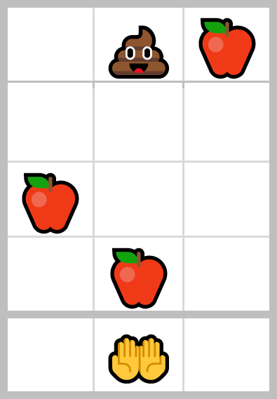
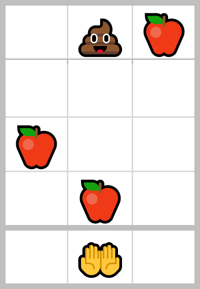
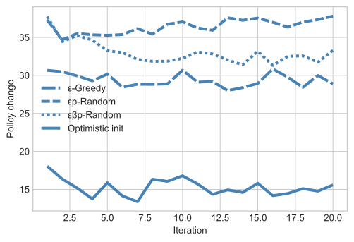
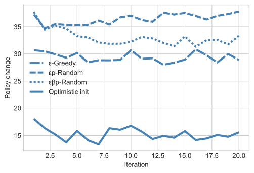

Reinforcement learning
This article is part of my series of projects around Machine Learning. Click here to see the list of projects of this series.
This project is the fourth and final assignment of CS-7641 Machine Learning at the Georgia Institute of Technology. The assignment is to solve two Markov Decision Processes using three different algorithms.
Methodology
Tools
This project was done in Python using Visual Studio Code and the Jupyter extension. I programmed the problems and algorithms using libraries Numpy, MatPlotLib and IPython.
Algorithms
I designed two problems for this assignment and will explain them in the next part. I will try to solve those problems using the Markov Decision Process algorithms Value Iteration [1], Policy Iteration [2] and Q-Learning [3].
Metrics
To assess the behavior and efficiency of the algorithms, I will measure and report different metrics.
When the algorithms try to improve their policy, I calculate a distance between the old and new policy by considering them as vectors consisting of the action to take for each state and using Euclidian distance. This will be plotted in blue.
After each iteration of the algorithm, the performance of the best policy is measured by running the problem hundreds of times to calculate the average, minimum and maximum scores. This will be plotted in red with the min-max envelope in a lighter red.
For each algorithm and problem, I also plot the computation time per state and per state-action combination. Keep in mind that this measure corresponds to the performance of my computer and could have varied from one run to another due to thermal throttling, other processes, etc. This will be plotted in green and yellow.
Problems
Catch the fruits
The first problem I implemented is the classic game where the player controls a basket (🤲) horizontally at the bottom of the screen and tries to catch falling fruits (🍎) while avoiding falling obstacles (💩). Catching the former rewards a positive score while the latter reduces the score. The player can move the basket one tile left or right at each turn and is blocked at the two sides.
3×3 grid
The parameters of the problem are the width and height of the grid (excluding the basket, the width is also the number of positions the basket can be in), the probabilities of each item appearing at the top of the screen at each turn and the rewards for each item.
 

4×3 and 3×4 grids
This problem can have interesting situations where moving to catch a fruit leads to a position where it is impossible to avoid an obstacle (a long and short grid makes it impossible to predict those traps while a thin and tall grid allows near perfect foresight) :

Staying in this position to catch the fruit necessarily leads to catching an obstacle
The states are represented as an int for the position of the basket and a ternary array for the falling items (0 for nothing, 1 for a fruit and 2 for an obstacle). Therefore, even if the basic 3×3 configuration is a small problem with 59k states, the number of states grows exponentially, and faster with the width than the height.
The basic 3×3 grid has 59k states (177k state-action combinations) ; the 3×4 has 1.6M states (4.8M state-action combinations) ; the 4×3 has 2.1M states (8.4M state-action combinations) ; and the 4×4 has 172M states (688M state-action combinations). Therefore, the study can practically only concern the first three configurations.
The problem is animated with Python print statements :

One of the resulting AIs playing CTF on a 3×4 grid
Reaching arm
The second problem I implemented is inspired by OpenAI Gym’s Reacher v2. It consists of a robotic arm fixed at the center of the field. Each joint of the arm can rotate infinitely. The goal is to touch a target with the effector. At each instant, the robot can move of one angular unit for each joint and gain a small reward based on the distance to the target (calculated with exponential decay). It the robot reaches the target, it is awarded a large score and the target teleports to a new random point.
Reacher with 2 arm pieces
The parameters of this problem are the number of arm pieces, the angular resolution for the joints, the target resolution, and the rewards coefficients. A high enough angular resolution is necessary to have a correct simulation (around 100 steps per revolution). The targets spawn on a grid of the target resolution squared, this value can be much smaller (around 10). Adding an arm piece increases the number of states tremendously as it is multiplied by the angular resolution.
Therefore, I will study three configurations : 2 arm pieces of resolution 60 with target resolution of 6 (129k states, 1.2M state-action combinations) ; 2 arm pieces of resolution 100 with target resolution of 10 (1M states, 9M state-action combinations) ; and 3 arm pieces of resolution 50 with target resolution of 6 (4.5M states, 121M state-action combinations).
Reacher with 3 arm pieces
The problem is visualized using Matplotlib’s animations :
This is an AI controlling the arm
Value Iteration
Catch the fruits
I first ran the algorithm on the small simplified problem with a 3×3 grid with 1.5k states with a discount factor γ of 0.5, 0.9 and 0.99.
As expected, for such a small problem, value iteration was able to find an optimal policy in a single iteration and the discount value has no noticeable impact on either performance improvement or policy convergence. This can be explained as in this problem, the agent only need to care about the next few rows of object and not the distant future (it actually only needs as many rows as the width of the grid which number of possible positions of the hand and the number of moves required to go from one side to the other plus one, this will be explained in more detailed later).
I then ran the algorithm on the more complex problem 3×3 problem with 59k states with a discount factor γ of 0.5, 0.9 and 0.99.
As we can see, for all γ, the maximum average performance was reached after 2 iterations only, and even just one iteration gets us to near best performance.
However, the larger the γ, the slower the policy converges. The early stop for a γ of 0.5 is due to the fact that the values U converges much faster (here it is stopped when the maximum U difference between two iterations for each state is less than 0.001).
Therefore, for this dimension of this problem, a rough policy is sufficient to reach best performance and the discount coefficient γ can be lowered to speed up convergence after that. The initial policy at iteration 0 is the policy of random actions. Therefore; after two iterations, we can read on the graph that only about 380 policy changes (changes as in distance in Euclidian metrics) were required to reach optimal performance, and the other changes until convergence didn’t affect the performance visibly.
Finally, I tried running the algorithm on the 3×4 problem with 1.6M states with a discount factor γ of 0.1, 0.5 and 0.9. Unfortunately, I lost the policy change graph.
The result is not very interesting, with the same behavior as for the 3×3 size and with the same score (the agent can at best pick up one fruit per turn). A taller grid gives the agent more knowledge of what falling items will arrive but with a width of 3, the furthest the agent can move is 2, thus needs a height of only 3 for perfect planning, anything above that is useless to him, as we can observe.
The higher number of states made the solving of a larger configuration practically impossible. Aside from the RAM usage, on my computer, value iteration takes about 45 seconds per iteration for the 3x3, 35 minutes for the 3x4 and 45 hours for the 4x3 that I had to stop after 8 hours 20 minutes when it had covered only 390k states of the 2.1M. And for the smaller simplified problem with the fruits only, each iteration took under a second.
Reaching arm
I first ran the algorithm on the problem with 2 arm pieces with angular resolution of 60 and target resolution of 6 with 129k states with a discount factor γ of 0.5, 0.9 and 0.99.
Here, a smaller discount factor makes the policy converge faster and reach the maximal performance earlier as well.
Again, we can conclude that this problem with the rewards the way they are doesn’t need to consider the rewards of faraway states to converge to an optimal policy and considering too much the far future pollutes the values and slows down convergence. I hypothesized that by removing the gradient distance rewards, the policy will converge far slower if at all.
To test this, I ran the same test but with the gradient reward disabled.
However, we observe that only the run with the lowest value of γ was affected. Therefore, the large rewards of reaching the targets propagates fast enough for high discount factors, but for a small discount factor, gradient rewards help it converge faster.
I then increased the dimensions of the problem by increasing the angular resolution of the joints from 60 to 100 and the target resolution from 6 to 10.
We can once again observe that smaller discount value makes the algorithm converge much faster. However, it seems that a value of γ of 0.1 and 0.5 leads to average performance slightly smaller than for 0.9.
I then increased the dimensions of the problem even further by adding a third arm piece but reducing the angular resolution to 50.
While the smaller discount value initially leads to faster performance growth, both converge to the optimal performance around the same time after 17 iterations but the smaller value stalled for a few iterations on a suboptimal policy while it made changes until it was able find a breakthrough. A stopping iteration condition based on performance alone would have prevented this breakthrough, one based on policy changes or value changes is therefore preferable.
Again, a lower discount factor makes the policy converge faster and a higher value keeps improving the policy for more iteration with no noticeable impact of the performance.
Computation time
The relation between computation time and either number of states or state-action combinations seems very roughly linear with both linear axes, hence linear.
Moreover, we can still observe that increasing even one dimension of a problem increases the number of states and state-action combination enormously and thus the computation time as well.
Policy Iteration
For each problem, the policy iteration was limited to 20 global iterations and 10 iterations of evaluation per global iteration.
Catch the fruits
I first ran the algorithm on the small simplified problem with a 3×3 grid with 1.5k states with a discount factor γ of 0.5, 0.9 and 0.99.
As with value iteration, the problem is just so simple that the algorithm is able to find an optimal policy very fast. A smaller value of the discount factor seems to lead to the optimal policy in a single iteration, while a larger value like 0.99 requires two iterations.
This is due to the fact that giving more weight to the far future is useless to the decision of the agent as explained earlier, and this pollutes the policy improvement and thus slows down the convergence slightly.
I then ran the algorithm on the more complex problem 3×3 problem with 59k states with a discount factor γ of 0.1, 0.5 and 0.9.
Here a very small value of the discount factor slows down the improvement of performance. Also, once again, a smaller value of γ also makes the policy converge faster and a larger value makes the algorithm change the policy without noticeable effect on performance.
The computation time was about 6 minutes per iteration for the 3x3, and so long for larger grids that I wasn’t able to get even one iteration to know. And for the smaller simplified problem with the fruits only, each iteration took about a second.
Reaching arm
I first ran the algorithm on the problem with 2 arm pieces with angular resolution of 60 and target resolution of 6 with 129k states. As this algorithm is much slower, I had to limit my study to a discount factor of 0.5 only.
Policy iteration reaches the same maximal score as value iteration, which we can assume (and confirm by looking at the animation of the agent playing) that it is what we would expect as the best possible policy.
Convergence to the maximal score is as fast as for value iteration but policy iteration stops improving the policy after about 14 iterations while value iteration kept making changes.
The algorithm is so slow that I wasn’t able to complete the training of an agent for the larger versions of this problem or for multiple values of the discount factor. I was just able to estimate the time each iteration could have taken.
Computation time
We observe similar behavior to value iteration but this algorithm is slower by about a factor of 10 for Catch The Fruit and 10000 for the Reacher.
Q Learning
As the number of hyperparameters of this algorithm is greater than the others, I will study them on the smallest problems then extrapolate for the larger.
Q-learning is a MDP algorithm that is blind to the formula of rewards and transitions. Hence, it has to explore the state and state-action spaces. There exist several exploration strategies, I will study some of them.
Catch the fruits
I started by studying this algorithm on the small simplified version of the problem. However, with the basic exploration strategy of choosing the action leading to the best Q value, the algorithm never improved.
Thus, I tried a common exploration strategy : ε-greedy exploration, which consist in choosing the Q-best action most but not all of the time, and choosing a random action with a probability of ε. This allows the algorithm to explore more of the state-action space before converging. For this study, I arbitrarily chose a discount factor of 0.5 and a learning rate of 0.5. (Here one tick on the plot is 100 iterations).
As we can see, a value of ε of 0, corresponding to the default exploration strategy described above never lets the algorithm explore enough to learn and performs no better than the random policy where ε equals 1.
Then, above from 0, the performance increases with lower values of ε. Thus, we have to study this parameter more precisely. We can also note that the policy always changes and more so with higher values of ε, but a maximum performance is reaches for all values after less than 500 iterations. Hence we can study the average performance after 1000 iterations for different values of ε :
As we can see, an ideal value of ε is contained within the 0.05 to 0.2 range (here the optimal score was reached for all values in this range). A value of 0.2 will be used in the following experiments.
Note that the best performances reached match that of the other two algorithms that, unlike Q-learning, have perfect knowledge of the rewards and transitions.
Then, using this exploration strategy, I studied the effect of the learning rate α.
As we can see, the learning rate has no observable effect on the performance after convergence or the speed of convergence either. An arbitrary value of 0.5 will be used for following experiments.
I then studied the effect of the discount factor γ similarly to the experiments for the other algorithms. (Again, one tick on the plot is 100 iterations).
A smaller value of gamma seems to lead to a faster convergence and better performance. The policy always changes, as seems to always be the case with Q-learning and ε-greedy exploration, which makes sense as the random exploration would require a very large amount of iterations to converge.
As we can see, a very high discount factor leads to poor performance but anything below 0.9 is good. The explanation for this is the same as the one given for the previous algorithms.
I also studied other exploration strategies : Optimistic Initialization encourages the algorithm to explore new state-action combinations by initializing all Q values to a non-zero value (here 1) ; what I will call εp-Random (for epsilon-probabilistically random) choses the action randomly proportionally to their Q value but with a basic probability of ε divided by the number of possible actions (here ε is 0.1 meaning for 3 actions, each has a basic probability of 0.033, then the remaining 0.9 is shared proportionally to the Q values) ; what I will call εβp-Random is similar to εp-Random but instead of using proportionality to the Q values, it is to the Qβ values thus allowing to tune how much it will commit to better values of Q or pick less a-priori preferable actions, here I took a β of 3 and ε of 0.1 (note that εp-Random is a special case of εβp-Random with a β of 1). I used the previously determined values : ε of 0.2 for ε-greedy exploration, α of 0.5 and γ of 0.5 for this study.
 

As I increased the number of runs the average performance is calculated with, I conclude that those variations stem from the algorithm itself.
Optimistic initialization performs the best followed by εβp-Random and closely after ε-Greedy while εp-Random performs significantly worse. A more complete study of the hyperparameters of those exploration strategies could lead more reliable results though. εp-Random and εβp-Random are however significantly slower than the two others.
A more extensive study with more time would experiment with the hyperparameters of these exploration strategy and include other strategies such as UCB1 and Boltzmann exploration.
I then applied those exploration strategies to the more complex 3×3 problem with the obstacles.
Here, optimistic initialization actually performed better than ε-greedy and converged with fewer changes to the policy, but neither have reached a plateau in the iterations of this experiment. εp-Random is barely better than the random policy in the amount of iterations studied here but still makes many changes to the policy so a longer training time could lead to different results. εβp-Random is slightly better than εp-Random but it also needs more iterations, though it looks like it could converge faster than εp-Random.
The required computation time were way too long to practically study the strategies or the parameters on the larger versions of the problem.
Reaching arm
I only ran the experiment for ε-greedy and optimistic initialization with the same values for the parameters as determined for the other problem as the computation times were much greater and it was practically impossible to study all the parameters and all the strategies. I also only ran the full experiment on the problem with 2 arm pieces, angular resolution of 60 and target resolution of 6.
Unlike the previous problem, here ε-greedy performs better than optimistic initialization. However, neither come even close to the performance seen with the other two algorithms that, unlike Q-learning, have perfect knowledge of the rewards and transitions. Note that this experiment took too long and the policy didn’t converge so the optimal performance could be reached but with a very long computation time, far longer than the other two algorithms.
Computation time
All computation times of this section are calculated for 1000 Q-learning iterations with 200 turns for each starting state and using TQDM’s measurement and estimations.
First, I measured the execution time for the different exploration strategies :
| ε-greedy | 25 sec |
| optimistic | 25 sec |
| εp-random | 30 sec |
| εβp-random | 35 sec |
Keep in mind that these values are rough estimates, but they are coherent with what we can expect looking at the computation required for each.
Then for each problem and some problem sizes with ε-greedy exploration :
| Problem | Number of states | Number of S-A | Computation time |
|---|---|---|---|
| CTFS 3×3 | 1.5k | 4.5k | 25 sec |
| CTF 3×3 | 59k | 177k | 120 sec |
| CTF 3×4 | 1.6M | 3.8M | 2400 sec |
| CTF 4×3 | 2.1M | 8.4M | 2700 sec |
| CTF 4×4 | 172M | 688M | memory error |
| R2 60 6 | 128k | 1.2M | 900 sec |
| R2 100 10 | 1M | 9M | 6600 sec |
| R3 50 6 | 4.5M | 121M | memory error |
CTF = catch the fruit ; CTFS = catch the fruit simplified (no obstacle) ; R2/R3 = reaching arm with 2 or 3 pieces ; first parameter of R is the angular resolution of each arm piece ; second parameter of R is the number of possible coordinates of the targets along each axis
Problems with more than a few million states and/or tens of millions of state-action combinations requires too much memory with Q-learning than my computer can provide (Python used almost 12Gb before crashing in those cases).
Keep in mind that this is for 1000 iterations, which was enough for the Catch The Fruit Simplified problem to converge, but Catch The Fruit 3×3 would have required about 3000 and Reacher 2-60-6 over 10000. While the other two algorithms converged in 1 to 5 iterations.
Nevertheless, 1000 iterations of Q-learning take longer than one iteration of Value Iteration or Policy Iteration for the smallest versions of the problems, while it takes significantly less time for the larger versions of the problems.
Conclusions
All-in-all, when we have access to the reward and transition functions, both Policy Iteration and Value Iteration perform perfectly on small problems (hundreds to low thousands of states). Policy Iteration seems to converge in fewer iterations than Value Iteration for large problems (hundreds of thousands to low millions of states) but takes longer to compute.
Q-learning doesn’t need the reward and transition functions and could converge faster than Policy Iteration and Value Iteration for large problems, but is far slower for small problems and requires too much memory for problems with more than a few million states and/or tens of millions of state-action combinations.
Moreover, many parameters of the algorithms can and have to be tuned for each algorithm so any conclusions made based on the limited experiments above needs to be conservative.
References
[1] Bellman, R. (1957). “A Markovian Decision Process”. Journal of Mathematics and Mechanics.
[2] Howard, Ronald A. (1960). “Dynamic Programming and Markov Processes”. The M.I.T. Press.
[3] Christopher J. C. H. Watkins, Peter Dayan (1992). “Q-learning”. Machine Learning.

This article is part of my series of projects around Machine Learning. Click here to see the list of projects of this series.
Go back to the list of projects